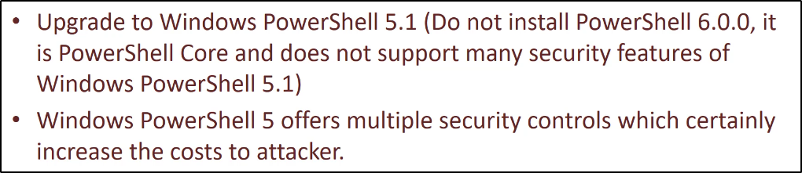
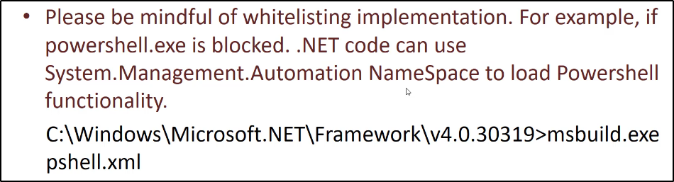
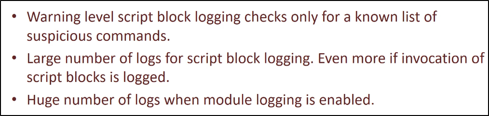
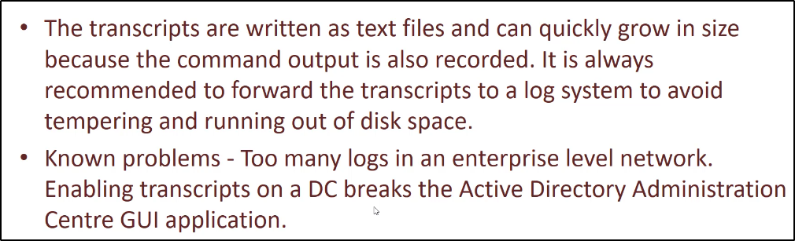

Powershell:


Powershell Whitelisting:


Powershell Whitelisting Bypass:

Powershell Enhanced Login:



Powershell System-wide Transcription:



AMSI (AntiMalware Scan Interface):


Powershell - Constrained Mode:


JEA (Just Enough Administration):

Powershell Bypasses:

Powershell - Bypass using Powershell downgrade:

Detection:

Powershell - Bypass Script Block Logging:

Detection:

Powershell - Unload Warning Level Script Block Logging:

Detection:

Powershell - Bypass AMSI:

Detection:

Powershell Obfuscation:

Detection:

Powershell - Bypass using Powershellv6